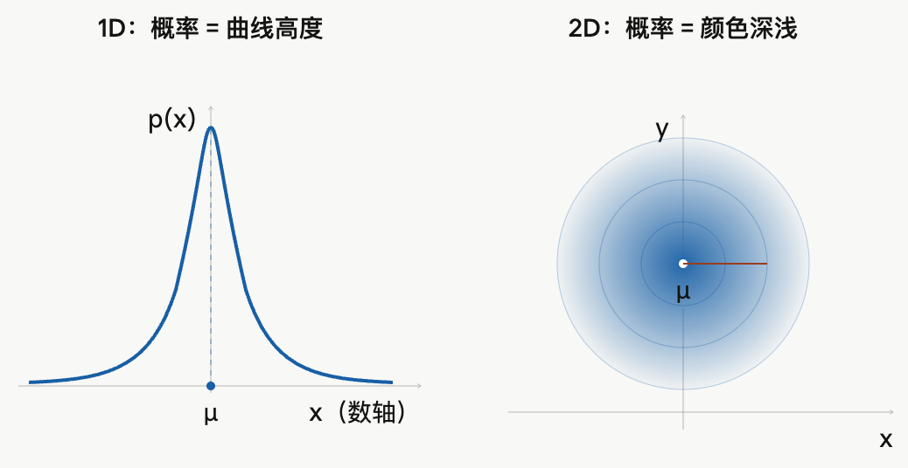
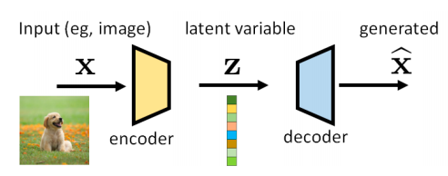
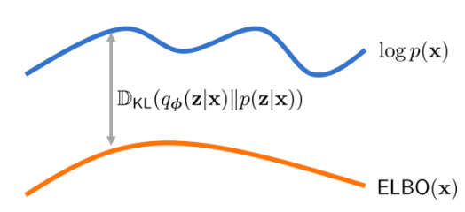
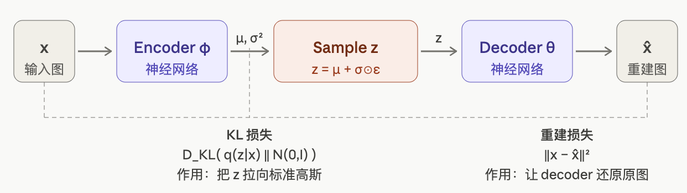
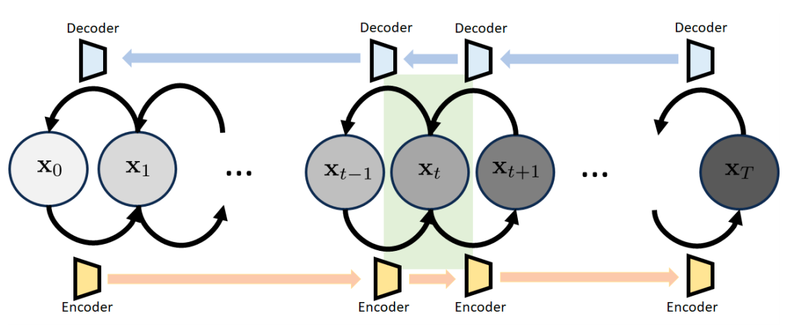
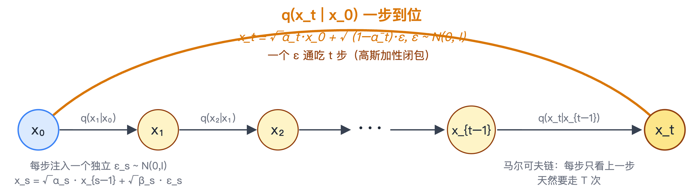
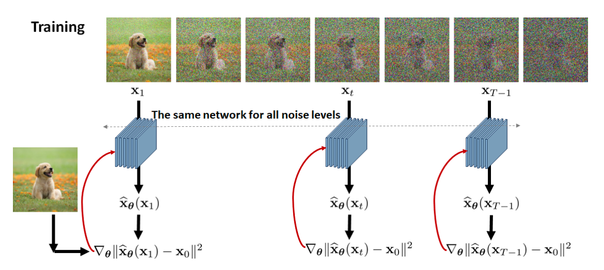
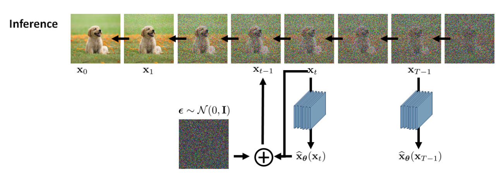
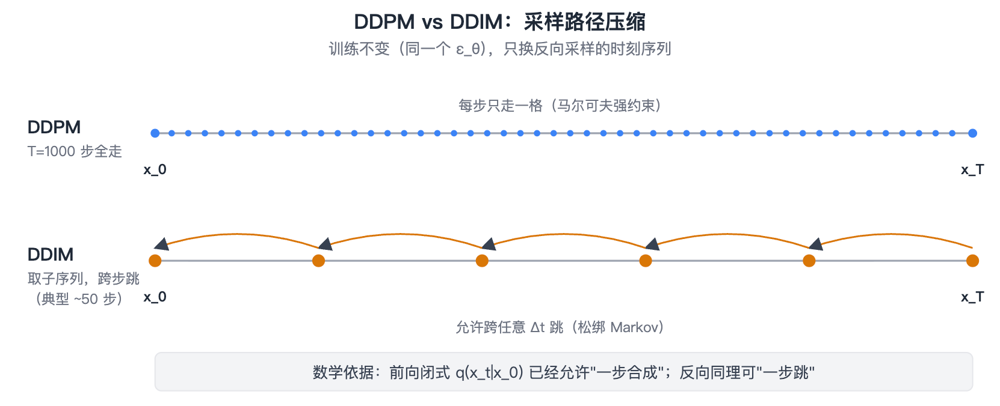
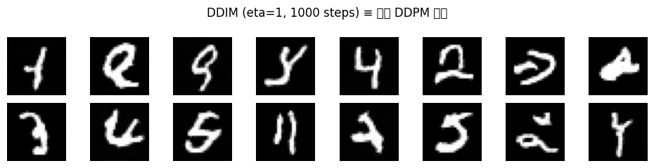

04-Diffusion (上): 从 VAE 到 DDPM / DDIM
TL; DR：数学速通 → 生成模型框架（VAE：一步把高斯映射成图 → diffusion：拆成多步+预测噪声）→ DDPM 训练与推理loop → DDIM（同一个网络，把 1000 步推理砍到几十步）
- [Quick Ref for 手写 code]：Basic DDIM ｜ ipynb ｜ colab - 训练 + 推理 + noise predictor 三段，配上模型 (U-Net) 数据 (MNIST)，几分钟训出会画数字的 toy model
- [可能会考的面试手写题]：Basic DDIM 训练 / 推理 loop（§4 + §5.2）
- 本篇只搭扩散框架；具体网络和工业级文生图系统（Latent Diffusion / SD、DiT、SD3 / FLUX）放在下篇
前言
前几篇讲的都是 LLM / VLM 风格的自回归生成——离散 token 依次生成、词表上采 next token。但图像是连续、高维信号，像素间没有天然先后顺序；因此图像生成走另一条路——diffusion 系列。
Diffusion 的整体逻辑 可以一句话压缩：生成模型本质是「学到样本背后的分布、再采样新样本」。
本篇的逻辑：
- 前身 VAE（§2）：encoder 和 decoder 各是独立 NN，单步映射 + 生成。但用于生成的 decoder 一步从纯噪跳到结构复杂的图太难、出图糊
- DDPM 解法（§3 / §4）：encoder 写成多步固定加噪公式（无参）+ decoder 学反解，两边共享同一个公式；同时把一步拆成 T 步、生成时逐步去噪。代价是推理要串行调用网络 T 步、采样开销大
- DDIM 加速（§5）：训练完全不动，只压缩采样步骤——把 1000 步推理压到几十步
题外话：Diffusion 和 LLM 的数学，感觉堪比初中和大学数学的区别 :(
1. 数学速通
这一节快速过一下后面用到的数学概念，熟悉的可以跳。后面公式涉及概率 / log 似然 / KL 时反复指回这里
1.1 高斯分布（正态分布）
记号 \(\mathcal N(\mu, \sigma^2)\)：一维上的正态概率分布，完全由均值 \(\mu\) 和方差 \(\sigma^2\) 决定。
多维 \(\mathcal N(0, I)\) 指每维独立、均值 0、方差 1，几何上就是「以原点为中心、各向同分布的随机噪声」，概率密度只取决于到中间点的欧氏距离 \(|x|_2\)。二维可视为圆形，三维是球体等等，torch.randn 一行就能采集。

"\(\mathcal N(0, I)\) 噪声"就是「从原点出发、各方向同概率撒一个点」——这正是 §2 之后扩散反向去噪的起点。
Diffusion 偏爱它有三个理由：
- 采样便宜（一行调用就行）
- 高斯的线性组合还是高斯（高斯族对加法 / 线性变换封闭）
- 两个高斯之间的 KL 散度有简单闭式——§1.4 ELBO 能算到底，靠的也是这条。
「闭式」 / closed-form：一个量能用有限步基本运算（加减乘除 / log / exp / 开方 / …）直接写成一个公式，不用数值积分、迭代逼近或采样估计。反义就是本篇反复说的「算不动」（如ELBO的 \(\log p(x) = \log \int p(x,z)\,dz\)（Decode, 所有潜空间->推图片），要对所有 latent 积分，高维下没法写成公式）。
所以「为什么扩散的前向噪声非要是高斯」不是巧合，是让数学和工程都能闭合的选择。
1.2 MLE 极大似然估计
给一堆样本 \(\{x_i\}\)，想找一组模型参数 \(\theta\)，使得「在 \(\theta\) 这个模型下，这些样本同时出现的概率」最大：
取 \(\log\) 是把乘法变加法、数值稳定，所以叫对数似然。几乎所有生成模型的训练都是这条线——直接最大化数据似然，或者最大化它的某个下界（下面 ELBO）。VAE / DDPM 的 loss 都是它的具体化。
1.3 KL 散度
衡量两个概率分布有多「远」：
\(q = p\) 时为 0，其他时候 \(\ge 0\)。
常见出处：你最早大概率是在知识蒸馏里见到它——让学生模型的输出分布逼近老师，loss 就是一个 \(D_{\mathrm{KL}}(\text{老师} \,\|\, \text{学生})\)。本篇 §1.4 ELBO 里那个"KL 正则项"和 DDPM loss 背后的 ELBO 推导（详见 Chan 教程）都是完全同一个东西，只是分布换成了 latent 上的高斯。
本篇需要记两条：
- 不对称：\(D_{\mathrm{KL}}(q \,\|\, p) \ne D_{\mathrm{KL}}(p \,\|\, q)\)；
- 两个高斯之间有闭式（可被直接表示为公式）：这正是 ELBO / DDPM loss 能算到底的关键（呼应 §1.1）。
1.4 ELBO 变分下界 (!)
目标：§1.2 MLE，让 \(\log p_\theta(x)\) 尽量大：
直观理解：这是生成方向（§2.3 主线）的 decoder 阶段——\(z\) 是所有可能的 latent（隐空间），\(x\) 是想生成的图。式子在说：
「对所有可能产生 \(x\) 的 \(z\)，按 prior \(p(z)\) 加权累加，得到 \(x\) 出现的总概率」

问题：算不动 / 不是闭式（§1.1）。两层根本理由：
- \(z\) 高维（几十到几百维），数值积分维度爆炸；
- 每个 \(z\) 要经 decoder NN \(\mu_\theta(z)\) 才能算出 \(p_\theta(x|z)\)——积分号里嵌着 NN，写不出原函数。
退而求其次：找一个能算的下界、最大化它——下界顶上去，\(\log p(x)\) 跟着升：

怎么找？ 引入辅助分布 \(q_\phi(z|x)\)（VAE 的 encoder），可以走两条等价的路径推出来同一个 ELBO，分别对应下面公式的两行。你也可以不看数学定义直接看结论。
-> 路径 1：贝叶斯配后验 KL → 第一行（不可算的几何的形式）
从 \(D_{\mathrm{KL}}(q_\phi(z|x) \| p(z|x))\) 出发——即 q 跟真实后验的 KL——用贝叶斯 \(p(z|x) = p(x,z)/p(x)\) 展开后移项可得：
-> 路径 2：Jensen → 第二行（可算的loss形式）
用 Jensen 不等式（\(\log\) 是凹函数）：把积分写成 \(q\) 下的期望，再用 Jensen 把 \(\log\) 挪进期望里：
把右边的 \(\log\) 拆开（乘除变加减）就是「重建项 − prior-KL」。
[结论——ELBO 的两种等价写法] $$ \begin{aligned} \text{ELBO}(\theta, \phi;\, x) &= \underbrace{\log p(x)}{\text{目标}} \;\;-\; \underbrace{D}}!\big(q_\phi(z|x) \,|\, p(z|x)\big){\text{上图里那块 gap = posterior-KL}} && \text{（图的具象化, 两项都算不动）} \[4pt] &= \underbrace{\mathbb E}[\log p_\theta(x|z)]{\text{重建项：decoder 要能还原}} - \underbrace{D \end{aligned} $$}}!\big(q_\phi(z|x) \,|\, p(z)\big)}_{\text{KL 正则项 = prior-KL}} && \text{（loss 用的形式）
- 第一行：ELBO = \(\log p(x)\) （由所有z算x，算不动），减去 gap（gap ≥ 0，也算不动）
- 第二行：ELBO = 重建项 − prior-KL - 重建项 \(= \mathbb E_q[\log p_\theta(x|z)] \approx \text{MSE}(x, \hat x)\)：\(x\) 走 encoder 出 \(z\) → decoder 还原 \(\hat x\) → 比 MSE（均方误差，"原图 vs 生成图 align"） - prior-KL \(= D_{\mathrm{KL}}\!\big(q_\phi(z|x) \,\|\, \mathcal N(0,I)\big)\)：encoder 输出离先验标准高斯多远（两个高斯之间的 KL 散度有简单闭式，可算） - 两项都可算 → 实际 loss 计算时用的形式
这两个都可以表示 ELBO 的定义，由于第一行算不动，所以用第二行实现具体计算。
[VAE 训练：调两组参数，一起最大化 ELBO]
- \(\theta\)（VAE 的 decoder / DDPM 的 noise predictor）：
- 直观：两条线一起抬高——\(\theta\) 同时影响 \(\log p\) 和 ELBO，但只有 ELBO 可算，所以调 \(\theta\) 顶 ELBO、\(\log p\) 跟着升
- 实义：让生成的 \(\hat x\) 贴近真实数据
- \(\phi\)（VAE 的 encoder）：
- 直观：只贴下面那条——\(\log p\) 不依赖 \(\phi\)，\(\phi\) 只能动 ELBO
- 实义：让 ELBO 贴近 \(\log p\)——差距越小，优化 ELBO 越接近真正想最大化的 \(\log p\)
[VAE 推理：只用 decoder]
-
由 \(z\) 推 \(\hat x\)：
- \(z\) 是从 prior \(\mathcal N(0, I)\) 采的一个具体向量（latent 空间中的一个点），decoder 把它映射成一张图 \(\hat x\)
-
\(\hat x\) 是什么？
- 就是由参数推出的一张图（tensor）——不是 ELBO，是图，不是数值
- ELBO / KL 都是用来算训练 loss的，推理时不算。decoder 之所以能出像样的图，是因为训练时 ELBO 把参数 \(\theta^*\) 调好了
-
文字 prompt 怎么进？
- 纯 VAE 不带条件
- 文生图：decoder 多加一个条件 \(c\)（文本 embedding，CLIP / T5 编码出来）
具体怎么注入条件（cross-attention / adaLN）见下篇。
1.5 蒙特卡洛估计
\(\mathbb E_{x \sim p}[f(x)]\) 是按 \(p\) 采无穷多个 \(x\)、对 \(f(x)\) 取平均。实操采不了无穷多个，用 batch 平均近似就是蒙特卡洛估计——多次抽样的均值逼近真实期望。
后面看到 \(\mathbb E_{t, x_0, \epsilon}[\dots]\) 这种式子（§3.1 DDPM loss），下标里三个变量分别是：
- \(x_0 \sim p_{\text{data}}\)：训练数据图 (实操 = batch element)
- \(t \sim \text{Uniform}\{1, \dots, T\}\)：时间步（在第几步加噪），均匀分布
- \(\epsilon \sim \mathcal N(0, I)\)：噪声向量
实操是：「每 step 给batch里的每个 \(x_0\) 配一组 \((t, \epsilon)\)， 分别计算loss后取均值」——单步是粗估，靠大量 step 反复抽样累计逼近真实期望（蒙特卡洛 = 用大量随机样本模拟真实分布）
1.6 重参数化 trick
想从 \(\mathcal N(\mu, \sigma^2)\) 采样、又要让梯度回传到 \(\mu, \sigma\)？把采样改写成：
随机性从 变量 \(\epsilon\) 来（和参数无关），\(\mu / \sigma\) 是确定函数，梯度能穿过去。VAE encoder 和 §3.1 的加噪公式都依赖这招。
1.7 SNR 信噪比
衡量"信号和噪声谁占上风"。给定观测 \(y = a\cdot\text{signal} + \sigma\cdot\text{noise}\)、噪声 \(\sim \mathcal N(0,I)\)，假设 signal 已归一化到单位方差：
- SNR → ∞：信号纯净
- SNR → 0：信号被噪声完全淹没——分布上和纯噪声不可区分
§2.4 / §3 会用到：DDPM 的前向 \(x_t = \sqrt{\bar\alpha_t}\,x_0 + \sqrt{1-\bar\alpha_t}\,\epsilon\) 对应 SNR \(= \bar\alpha_t/(1-\bar\alpha_t)\)，从 \(t=0\) 的 SNR = ∞ (纯图)单调降到 \(t=T\) 的 ≈0（纯噪声）——"逐步销毁信号"的量化指标。
2. 从 VAE 到 Diffusion
这一节顺着 Stanley Chan 的 Tutorial on Diffusion Models for Imaging and Vision（arXiv 2403.18103）的讲法，用我们自己的话压一遍：扩散模型接在 VAE 这条「latent 生成模型」谱系后面。
2.1 我们到底在学什么
生成模型的目标：手上只有一堆图像样本 \(\{x_i\}\)，想学到它们背后的真实分布 \(p(x)\)，并且能从中采样出新的、没见过的样本。难点是 \(p(x)\) 高维、未知、没有闭式（不能用公式直接表示）。
主流思路不是去直接写出 \(p(x)\)，而是学一个从简单分布到数据的映射：钦定一个简单的 latent 分布 \(p(z) = \mathcal N(0, I)\)（标准高斯），再学一个映射把从中采出的向量 \(z\) 变成数据 \(x\)。
于是采样变成两步：从 \(\mathcal N(0,I)\) 采一个 \(z\) → 映射 → 得到 \(x\)。VAE 和 diffusion 都走这条路，区别只在「这个映射怎么搭、分几步」。
两个基础约定：
- \(z\) 是一个向量，不是分布——记号 \(z \sim \mathcal N(0,I)\) 读作"\(z\) 从标准高斯采"。\(z\) 的维度是超参，有点类似 hidden dim（玩具 VAE 几十维、SD 的 VAE ≈ 16k 维），远低于像素维度（几十万）——这正是"latent"（隐空间）的字面意思：把图压进一个紧凑空间。
- \(\mathcal N(0,I)\) 不是训出来的，是我们指定的；训的是映射本身（VAE 的 decoder、diffusion 的 noise predictor）。
2.2 AE 起点
AE（AutoEncoder）是"先压缩、再还原"的两段式：
训练让 \(\hat x\) 贴近原图，loss 是重建 MSE \(\|x - \hat x\|^2\)。AE 能学到紧凑的 latent 表征，但不能生成——从 \(\mathcal N(0,I)\) 采个 \(z\) 喂进 decoder 出垃圾，因为 AE 没约束 latent 空间长成什么形状。VAE 接着回答的就是：「怎么让 latent 空间长得齐整、能从 \(\mathcal N(0,I)\) 直接采」。
2.3 VAE = AE + 三处改造
VAE 沿用 AE "压缩 → 还原" 的两段结构，加三处改造让 latent 空间长得"齐整"——从 \(\mathcal N(0,I)\) 随便采就能直接出图：

- encoder 输出 latent 分布：encoder 给出一对 \((\mu, \sigma)\)，确定一个依赖输入 \(x\) 的高斯 \(\mathcal N(\mu(x), \sigma^2(x))\)——不是标准高斯（每张图对应不一样的 \(\mu, \sigma\)），但下面 KL 项会把它向标准高斯拉。训练后\(z\) 从这个高斯里采。
- 重参数化 \(z = \mu + \sigma\epsilon\)：直接"从 \(\mathcal N(\mu, \sigma^2)\) 采 \(z\)"是个随机操作，梯度不可穿。等效写成 \(\mu, \sigma\)（NN 的确定函数，梯度能穿）+ 随机源 \(\epsilon \sim \mathcal N(0, I)\)（不可学），梯度只走可学那一支（详见 §1.6）。
-
loss 用 ELBO：理想 loss 是负对数似然 \(-\log p(x)\)——对应 §1.2 MLE 的目标"模型给真实数据打的概率越高越好"（最大化 \(\log p(x)\) 等价于最小化 \(-\log p(x)\)）。但它算不动——\(\log p(x) = \log \int p(x|z)p(z)\,dz\)，要对所有 latent \(z\) 积分，高维下没闭式。
解决思路（完整推导见 §1.4 ELBO 变分下界）：找一个可算的下界 ELBO，max ELBO 等于把 \(\log p(x)\) 顶上去。引入 VAE encoder \(q_\phi(z|x)\)，ELBO 化成可算的两项：
- 重建项：\(x\) → encoder → \(z\) → decoder → \(\hat x\)，越接近原图越大（\(\le 0\)，越接近 0 越好） - KL 项：encoder 输出离标准高斯多远，\(\ge 0\)，被压向 0 等价于把 \(q_\phi(z|x)\) 拉向 \(\mathcal N(0,I)\)
两项都可算：KL 是两个高斯之间的可算闭式，重建项靠 batch 平均做蒙特卡洛估计（§1.5）。所以 loss = \(-\)ELBO，可微、可训。
KL 项就是把 encoder 输出拽向标准高斯的"扭力"——训练完后，所有训练样本的 latent 加起来差不多铺满整个标准高斯球；推理时直接从 \(\mathcal N(0, I)\) 采的 \(z\) 大概率落进 decoder 见过的区域，能出图。
AE / VAE 对比：
| AE | VAE | |
|---|---|---|
| encoder 输出 | 一个点 \(z\) | 分布 \(\mathcal N(\mu, \sigma^2)\) |
| 过 decoder 前 | 直接拿 \(z\) | reparam 采 \(z = \mu + \sigma\epsilon\) |
| loss | 重建 MSE | ELBO = 重建项 − KL |
| 能从 \(\mathcal N(0,I)\) 生成 | 不能 | 能 |
训练 / 推理：训练时 encoder + decoder 一起调，最大化 ELBO；推理（= 生成）时扔掉 encoder，从 \(\mathcal N(0,I)\) 采 \(z\) → decoder → 出图。
VAE 的弱点在"一步"：decoder 一步从 \(\mathcal N(0,I)\) 跳到结构复杂的真实图像，这个映射太难学，VAE 出图通常偏糊。§2.4 的 diffusion 把这一步拆成 T 步。
记住这个 VAE：它在下篇 latent diffusion 里会原样回来——只借它的 encoder/decoder 做压缩，生成交给 diffusion。
2.4 从 VAE 到 Diffusion：把一步拆成很多步
VAE 难在"一步"——decoder 要一次从 \(\mathcal N(0,I)\) 跳到真实图。Diffusion 的办法是 把这一大跳拆成 T 个简单的小步，每步只去掉一点点噪声，每个小步就是一个简单的条件高斯，好学得多。
VAE vs Diffusion 对照：
| 左端（图侧） | 右端（噪声侧） | 前向参数 | 后向参数 | |
|---|---|---|---|---|
| VAE | 训练图 \(x\) | latent \(z\)（低维） | 有（encoder 学映射） | 有（decoder 学映射） |
| Diffusion | 训练图 \(x_0\) | 纯噪声 \(x_T \approx \mathcal N(0,I)\)（和图同维） | 无（固定加噪步骤） | 有（noise predictor 学） |
两条主要差异：
- 维度：VAE 的 \(z\) 是低维 latent（几十到几百维）；diffusion 的 \(x_T\) 和原图同维。
- 怎么变成 \(\mathcal N(0,I)\)——映射 vs 销毁：
- VAE 靠 encoder 映射：把每张图主动放进 \(\mathcal N(0,I)\) 某个位置（每张图位置不同），encoder 必须带参数学映射
- Diffusion 靠 schedule 销毁：给图反复掺噪声，把 SNR（§1.7）从 ∞ 一路压到 \(\sim 4\times 10^{-5}\)，\(x_0\) 被彻底淹没，所有起点都混成一团近似 \(\mathcal N(0,I)\)，所以前向不需要参数
把"放到对的地方"换成"擦掉只剩噪声本身"，是 diffusion 摆脱前向参数的关键——信息不在前向、全在反向网络的权重里。
前后向流程：

-
前向 encoder：固定的多轮加噪，无参数；全场唯一的随机源是采一次 \(\epsilon \sim \mathcal N(0,I)\)。整条 T 步前向塌成一次 reparam（§1.6）：
\[x_T = \underbrace{\sqrt{\bar\alpha_T}\,x_0}_{\mu\text{：确定}} + \underbrace{\sqrt{1-\bar\alpha_T}}_{\sigma\text{：确定}}\,\epsilon\]默认 schedule（T=1000）下 \(\sqrt{\bar\alpha_T} \approx 0.007\)，\(x_T\) 整体近似 \(\mathcal N(0,I)\)。这个 \(\epsilon\) 在 §3 训练里双重身份：算 input \(x_t\) 用它、网络 GT 也是它（§3.1）
- 反向 decoder：网络要学的。学会"给定 \(x_t\) 怎么退回 \(x_{t-1}\)"后，从随便采的 \(x_T\) 走 T 步得到新图
Note：图里正反向画成了同一个 \(x_t\)，表示同一组噪声等级。训练时 \(x_t\) 来自真实图加噪，采样时 \(x_t'\) 来自模型反向链去噪。但具体采样结果不保证逐步对齐，会有模型误差和累计误差。
总之，可以直接把 diffusion 看成一个特殊的层级 VAE：T 层、每层 latent 和数据同维，前向写死、只有反向（去噪）要学。VAE 那个"难学的大映射"于是化简成"T 个好学的小映射"——"一个 ELBO"也摊成"T 个去噪项的和"。
3. DDPM
DDPM（Ho et al., 2020）把 §2.4 那个"T 步小去噪"的想法定型成第一个能跑的扩散模型。沿用 §2.4 的 encoder / decoder 划分：
- encoder（前向加噪）：固定 schedule、无参数，靠高斯加性闭包从 \(x_0\) 一步算到任意 \(x_t\)
- decoder（反向去噪）：要训的网络 \(\epsilon_\theta(x_t, t)\)，预测当初从 \(x_0\) 掺进去的那个 \(\epsilon\)
为什么 decoder 只预测"一个噪声"？ 因为高斯的加性封闭（§1.1）让一轮和多轮加噪都能写成「reparam + 一个 \(\epsilon\)」的同一种形式：

| 加多少轮 | 公式 |
|---|---|
| 1 轮（\(x_{t-1} \to x_t\)） | \(x_t = \sqrt{\alpha_t}\,x_{t-1} + \sqrt{\beta_t}\,\epsilon_t,\;\;\epsilon_t \sim \mathcal N(0,I)\) |
| t 轮合一（\(x_0 \to x_t\)） | \(x_t = \sqrt{\bar\alpha_t}\,x_0 + \sqrt{1-\bar\alpha_t}\,\epsilon,\;\;\epsilon \sim \mathcal N(0,I)\) |
t 个独立 \(\epsilon_s\) 的线性组合仍是 \(\mathcal N(0,I)\)，所以多轮可以合成一个等效 \(\epsilon\)——无论走了几步、噪声怎么累积，加噪过程永远只有"一个噪声变量"。decoder 不用管步数也不用管累积，只学一件事：从加噪结果反推这一个 \(\epsilon\)。所以 decoder 是一个 \(\epsilon_\theta\) 通吃所有时间步。
记号上区分两个东西：
- T（总步数）是超参，固定值（约定 1000）
- t（当前在第几步，\(1 \le t \le T\)）是变量，作为输入喂进网络让它知道现在的噪声等级；\(x_0\) 为纯图，\(x_T\) 为纯噪声
§3.1 把训练和推理的公式写出来：encoder 加噪公式（共用工具）→ 训 decoder 的 loss → decoder 反向去噪的迭代式。
3.1 训练与推理公式
先约定记号：每步噪声强度由调度 \(\beta_t\) 控制（\(\beta_1<\dots<\beta_T\)，约定线性从 1e-4 到 0.02），令 \(\alpha_t=1-\beta_t\)、\(\bar\alpha_t=\prod_{s=1}^t\alpha_s\)。
[加噪公式（共用：训练 / 推理都要用）]
逐步加噪是马尔可夫链（每步只依赖上一步），但由于高斯叠加还是高斯（线性组合封闭），所以可以跳过中间步、直接从 \(x_0\) 算任意 \(x_t\)：
形式上正是 reparam（确定部分 + 噪声分离）。\(\bar\alpha_t\) 从 1 单调降到 ≈0，所以 \(t\) 小时 \(x_t\) 几乎是原图、\(t\) 大时几乎是纯噪声。
这个公式本身不是一个独立的"训练 / 推理阶段"，是下面两段共用的工具：
- 训练正向用它造 input \(x_t\)（给 \((x_0, \epsilon)\)，一次运算出 \(x_t\)，当样本送入训练）
- 推理反解它去噪（"\(x_t\) − 噪声 → 干净方向"）
[训练 = 训 decoder \(\epsilon_\theta\)]

每个 \(x_0\) 在 \(\{1, \dots, T\}\) 里均匀抽一个时间步 \(t\)，配上加噪公式算出的 \(x_t\) 喂进网络，让它猜公式里用的那个 \(\epsilon\)，loss 是 MSE：
- input：加噪图 \(x_t\)（加噪公式算出来的）+ 时间步 \(t\)（每个 \(x_0\) 独立在 \(\{1, \dots, T\}\) 内均匀抽一个）
- GT：加噪公式里那一步随机采的 \(\epsilon\)（self-supervised，
torch.randn就行） - loss：朴素 MSE——回归任务，没有对抗、没有 KL（已在 ELBO 推导里化掉，详见 Chan 教程）
期望对应实操（蒙特卡洛）：batch 里每个 \(x_0\) 各随机抽一组 \((t, \epsilon)\)，算 MSE 取平均。
[推理 = 用同一个 decoder 跑加噪公式的「反函数」]

训练完后，这个噪声预测网络 \(\epsilon_\theta\) 拿来做推理：从纯噪声起步，每步让 decoder 预测当前的 \(\epsilon\)，再按反向公式退一步，DDPM 设计成 T 步退到 \(x_0\)（§5 DDIM 会去掉这个约束）。
- 起点：\(x_T \sim \mathcal N(0, I)\)（一次
torch.randn） - 每步：\((x_t, t)\) 喂进 decoder → \(\hat\epsilon = \epsilon_\theta(x_t, t)\) → 按下面公式退到 \(x_{t-1}\)
- 终点：\(t = 0\) 时不加 \(z\)，输出 \(x_0\)（生成图）
直觉：加噪公式的反解 +\(\sigma_t z\) 补回一点随机性。
这一步串行、要重复 T 次——§3.2 讨论的采样开销问题就在这里。
注："T 步"是上面反向公式里 Markov 假设（\(x_{t-1}\) 只依赖 \(x_t\)）的，不是必须的——训练只让 \(\epsilon_\theta\) 在 \(t \in \{1,\dots,T\}\) 上能预测 \(\epsilon\)，反向流程可以重新设计。DDIM (§5) 利用了这一点——允许增大时间步间隔，几十步出图
3.2 早期主要限制：采样慢
DDPM 2020 年质量就够用了，但没法直接拿去做产品，问题不在算法、在工程：
生成一张图要串行调用网络 T=1000 次。这 T 步有严格依赖（\(x_{t-1}\) 依赖 \(x_t\)），没法并行；每步还是一次对整张图的完整前向。对比自回归 LM 生成 1000 个 token 也要 1000 次前向，但 LM 有 KV cache、每步只算一个 token；扩散每步都重算整张图，单张图就要几十秒。
这个采样开销问题后续由三条路线分别解决（详见 §6 全篇 roadmap），其中最简单的一条就是 DDIM（§5，本篇）：不改训练、只换采样器。
另一个独立问题是「像素空间计算量太大」（512×512 直接做扩散，FLOPs 量级过高）——由下篇的 latent 空间解决。
4. 手写最基本的 DDPM
目的：看看「§3.1 训练与推理公式」落到代码到底几行；以及那个被反复调用的网络（noise predictor）该长什么样。
先把调度预计算好（全程不变）：
T = 1000
betas = torch.linspace(1e-4, 0.02, T) # 线性 β 调度（约定，可换 cosine）
alphas = 1.0 - betas
abar = torch.cumprod(alphas, dim=0) # ᾱ_t = Π α_s ，从 ≈1 单调降到 ≈0
4.1 训练 loop
对应 §3.1 的 ①前向闭式 + ②MSE。核心就三行：抽 t、加噪、回归噪声。
def train_step(x0, model): # x0: 一个 batch 的干净图 [B, C, H, W]
B = x0.size(0)
t = torch.randint(0, T, (B,)) # 每个样本独立随机一个时间步
eps = torch.randn_like(x0) # 要预测的目标噪声（ground truth）
# ① 前向：一步到位加噪，不迭代（abar[t] 取出来后 reshape 成 [B,1,1,1] 广播）
a = abar[t].view(B, 1, 1, 1)
xt = a.sqrt() * x0 + (1 - a).sqrt() * eps
# ② 网络预测噪声 → MSE
eps_pred = model(xt, t)
return F.mse_loss(eps_pred, eps) # 整个训练目标就是这个
和 VAE 比，这里没有 KL 项、没有重参数采样里的方差项——就是一个回归。
训练稳定、几乎不会崩，是 diffusion 能做大的重要原因。
4.2 推理 loop
对应 §3.1 的推理公式。从纯噪声起步，T 步串行去噪：
@torch.no_grad()
def sample(model, shape): # shape: [B, C, H, W]
x = torch.randn(shape) # 从 x_T ~ N(0, I) 起步
for t in reversed(range(T)): # T 步串行 —— §3.2 讨论的采样开销
eps = model(x, t)
mean = (x - (1 - alphas[t]) / (1 - abar[t]).sqrt() * eps) / alphas[t].sqrt()
if t > 0:
x = mean + betas[t].sqrt() * torch.randn_like(x) # 补回随机项
else:
x = mean # 最后一步不加噪，输出干净图
return x
§4.1 + §4.2 + 下面 §4.3 的网络拼起来，配个 MNIST 量级数据集，单卡几分钟就能训出会画数字的 toy DDPM——核就这么大。
4.3 网络：noise predictor
注意上面两段代码里，model 一直是个黑盒 ε_θ(x_t, t)：输入一张和图同尺寸的 \(x_t\)、一个标量 t，输出一张同尺寸的噪声图。这是个图到图（同分辨率）的映射，约束只有两条：
- 输入输出同形状（预测的是逐像素噪声）
- t 要喂进去：t 先过一个正弦位置编码（同 01-Transformer.md 的 PE 思路）变成向量，再注入网络每一层——因为「该去多少噪」强依赖当前在第几步
满足这两条的网络都行。历史上的标准选择是 U-Net（CNN，下采样—上采样 + skip 连接，下篇细说），2023 年起被 DiT（Transformer，下篇）取代。网络结构和扩散框架是解耦的——换网络不影响 §4.1/§4.2 这套训练/采样逻辑。
这个 BasicDDPM（预测 ε 训练 + 迭代采样 + 任意 noise predictor）就是后续所有模型的公共最小核，后面每个模型 = 这个核 + 一处增量——具体对照见 §6。
5. DDIM：把推理砍到几十步
DDIM（Song et al., 2020.10）是针对 §3.2 采样开销最直接的方案：不重新训练，只换 §4.2 的采样公式。
5.1 采样路径压缩

[Markov 假设松绑]
DDPM 整个框架的初始idea基于一阶马尔可夫链的（\(x_{t-1}\) 只依赖紧邻的 \(x_t\)）。根据它的假设，训练和推理都是在前一个 state 上叠一个新高斯（\(\sigma_t z\) 是方差项）；每步只走一格，所以推理 T=1000 步要全部走完（也就是DDPM的推理设计）。
但训练那边其实早就压缩过了：§3 开头的高斯加性封闭让 t 步合并成一步——\(x_t = \sqrt{\bar\alpha_t}x_0 + \sqrt{1-\bar\alpha_t}\epsilon\) 直接从 \(x_0\) 跳到任意 \(t\)，根本不走 \(\{1, 2, \dots, t-1\}\) 这串中间态。
反向同理：给定 \(\hat x_0\) 和 \(\hat\epsilon\)，可以用同一个公式合成任意更早的 \(x_{t'}\)。所以推理也不必走完 \(\{T, T-1, \dots, 1, 0\}\) 全 1000 步，挑一个稀疏子序列就行——比如 \(\{1000, 980, 960, \dots, 20, 0\}\)，每步跨 20、50 步出图。又因为训练 loss 只约束前向边缘分布 \(q(x_t|x_0)\)、不规定反向必须 Markov，反向流程就可以重新设计，训好的 \(\epsilon_\theta\) 不用动。
[DDIM 反向公式]
DDIM 对 §4.2 的推理 loop 做两处改：(1) 在 \(\{1, \dots, T\}\) 里取一个子序列（典型 50 个时刻）跨步推理；(2) 去掉每步的 \(\sigma_t z\) 随机扰动（设为 0）。每一步反向改写成两步走：
- 估计 \(x_0\)（由 §3.1 加噪公式反解）：
- 合成 \(x_{t'}\)（用同一个加噪公式，\(t' < t\)，不必相邻）：
公式里的 \(\sigma\) 控制反向的随机性：
- \(\sigma = 0\)：确定性反向（狭义 DDIM）。整条反向路径由 \(x_T\) 唯一决定。等价于 probability-flow ODE 的离散化（score / SDE 视角下篇会用到时再展开）。
- \(\sigma > 0\)：随机性介于 0 与 DDPM 之间，常用超参 \(\eta\) 做插值（\(\eta = 0\) 对应 \(\sigma = 0\)，\(\eta = 1\) 退回 DDPM）。
副产品：\(\sigma = 0\) 时 \(x_T \leftrightarrow x_0\) 是可逆映射，可用于图像插值、编辑（在噪声空间操作）。
5.2 简化代码
和 §4.2 比，改动只在采样：步数变少、按子序列跳、去掉（或调小）随机项。下面用 # ≠§4.2 标出不同的行：
@torch.no_grad()
def ddim_sample(model, shape, steps=50, eta=0.0): # ≠§4.2: steps 远小于 T
seq = torch.linspace(T - 1, 0, steps).long() # ≠§4.2: 在 1000 步里取一个子序列
x = torch.randn(shape)
for i in range(len(seq)):
t = seq[i]
tp = seq[i + 1] if i + 1 < len(seq) else -1 # 下一个（更早的）时刻
eps = model(x, t)
x0_pred = (x - (1 - abar[t]).sqrt() * eps) / abar[t].sqrt() # ≠§4.2: 先估计 x_0
a_prev = abar[tp] if tp >= 0 else torch.tensor(1.0)
# ≠§4.2: 直接跳到 t' ; eta=0 时无随机项 → 确定性
x = a_prev.sqrt() * x0_pred + (1 - a_prev).sqrt() * eps
return x
实践里 DDIM 50 步、甚至 20 步的质量就接近 DDPM 1000 步，今天几乎没人用原始 DDPM 1000 步采样了——DDIM（及其后继 DPM-Solver 等更高阶 ODE 求解器，本篇不展开）是默认。再往下压到个位数步，就得靠蒸馏 / flow matching（下篇）。
5.3 时间线回顾
| 时间 | 工作 | 一句话核心贡献 | 备注 |
|---|---|---|---|
| 2013–14 | VAE (Kingma & Welling) | latent 生成模型 + ELBO | diffusion 的前身 |
| 2015 | Sohl-Dickstein et al. | 扩散概率模型雏形（受非平衡热力学启发） | 玩具规模 |
| 2019 | Song & Ermon (SMLD) | score matching + Langevin 采样 | 连续视角源头 |
| 2020.06 | DDPM | 定型「预测 ε + 简化 MSE」，质量首次能打 | 像素空间，1000 步 |
| 2020.10 | DDIM | 非马尔可夫采样：确定性 + 跳步 | 训练不变，几十步出图 |
| 2020–21 | Song et al. (Score SDE) | 用 SDE 统一 DDPM 与 score matching | probability-flow ODE |
再往后（CFG → Latent Diffusion / SD → DiT → SD3/FLUX）是「从算法变成系统」的演化，整条时间线在下篇 05-Diffusion进阶.md 前言接着列。
6. 小结（上篇）
一条线串起来：
- Idea（§2.1）：生成模型核心问题是「手上一堆样本 → 学到背后分布 \(p(x)\) → 采样新样本」。Diffusion 的解法是训一个高斯噪声预测器 \(\epsilon_\theta\)。
- 前身 VAE（§2.2 / §2.3）：AE 起点 + 三处改造，「Encoder（图 → latent）+ Decoder（latent → 图）」一步到位的框架。但 decoder 一步从高斯跳到图太难，出图通常糊。
- DDPM（§3-§4）：在 VAE 的 encoder/decoder 框架上把一步拆成 T 步。两个简化：
- encoder 固定的多轮加噪，无参数
- decoder 是同一个加噪公式的"反函数"
- 训练用 \((x_0, \epsilon)\) 一步合成 \(x_t\) 造数据、训练预测 \(\epsilon\)；推理从纯噪 \(x_T\) 起步、按反函数串行 T 步退到 \(x_0\)
- DDIM（§5）：DDPM 推理 T=1000 步串行太慢。再次利用「加性封闭」特点，压缩推理采样到几十步
本篇还没正式上模型架构——只搭起了 diffusion 的训练/推理框架，模型 noise predictor \(\epsilon_\theta\) 一直当黑盒处理。具体网络长啥样、\(x\) 是像素还是 latent、文本条件怎么注入，下篇接着讲。
接 05-Diffusion进阶.md（下）：Latent Diffusion / Stable Diffusion（VAE latent + 文本条件 + CFG）→ DiT（U-Net 换 Transformer）→ Flow Matching / SD3·FLUX。
7. 代码实现
框架结构沿用 §4「手写最基本的 DDPM」三段（§4.1 训练 loop + §4.2 推理 loop + §4.3 noise predictor），其中推理部分换成 §5.1 的采样路径压缩，eta + steps 两个旋钮覆盖 DDIM 和 DDPM 两种推理。
模型和数据部分是为了让 demo 能端到端跑通而拼凑的占位实现：toy U-Net（28×28 → 14×14 → 7×7 + skip 连接，sinusoidal time embedding）+ MNIST。真正的工业 noise predictor 架构（U-Net 细节 / DiT / 文本条件注入）下篇才展开。
单卡几分钟就能训出会画数字的 toy。完整 ipynb：07_basic_ddim.ipynb ｜ colab。
T4 单卡 ~4 分钟运行完，模型 0.87M 参数，10 epoch 后 loss 从 ~0.09 收敛到 ~0.03。DDPM 反向（eta=1, steps=1000）采样效果。

可辨认的数字大约 6 成，其余偏糊。质量上不去主要是 toy 规模的妥协：
- 网络太小：0.87M 参数远低于生产 MNIST diffusion 的 5–50M 量级
- 训得太短：10 epoch 离收敛还远（一般 50+ epoch）
- U-Net 简化：只有 2 级 down/up、没有 self-attention 层，难以建模图像内部的长程关系
为了 demo 能在几分钟内跑通，这三处都向 toy 量级妥协了。真正能打的工业架构在下篇展开。
后续模型 = 这个 BasicDDIM 框架 + 一处增量：
| 模型 | 增量 | 章节 |
|---|---|---|
| LDM / SD | x 从「像素」换成「VAE latent」+ 文本条件 + CFG | 下篇 |
| DiT | noise predictor 从 U-Net 换成 Transformer | 下篇 |
| Flow Matching | 训练目标从「预测 ε」换成「预测速度 v」，路径拉直 | 下篇 |